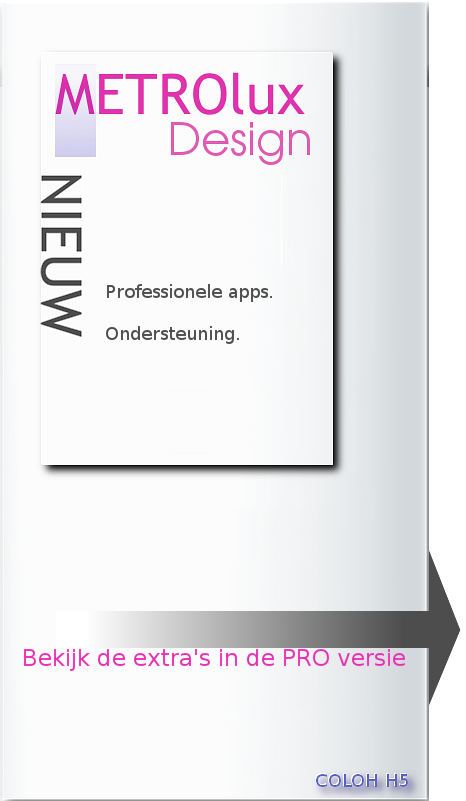

METROluxPRO Versie 1.0.0.16 ©2014 A.Greven
Onze sponsors & advertentie pagina
Wij willen u graag onze sponsors en adverteerders voorstellen.
zij maken het mede mogelijk dat het METROlux menu is geworden wat het nu is!
ONZE SPONSORS:
Nog geen Sponsor
SPONSOR WORDEN?
Voor bedrijven,clubs of vereningen:
Ik wil Sponsor worden
Voor partikulier:
Meer informatie over een link met METROlux
U heeft een andere vraag?
Neem contact op met:
dhr A.Greven telefoon +31(0)633962565 of stuur een mailbericht met uw vraag naar:
METROlux-beheer
|
AANBIEDINGEN VAN ADVERTEERDERS.
Nog geen advertentie geplaatst
|
METROlux Versie 1.0.0.16METROluxPRO al vanaf €19,50.
©2014-2017
|
Beste gebruiker,
Bedankt voor uw interesse en voor het aankopen van het METROlux menu.
|
Gebruik nu alle functies met de betaalde versie en maak kennis met de vele extras in uw menu als:
Uitgebreide gebruikers handleidingen tips met uitleg en handige links,Libre-office cursussen,tips en extra functies als cloud voorzieningen en 3D printing.
En meer modules die het gebruikers gemak en de snelheid van het menu verbeteren.
BESTEL NU METROluxPRO:
Voor aanpassingen en activeren van uw eigen tiles kunt u contact opnemen met:
dhr A.Greven telefoon +31(0)633962565 of stuur een mailbericht met uw vraag naar:
METROlux-beheer
Benodigde software:
Alle tiles die op het menu zichtbaar zijn zijn vooraf ingesteld om de bijbehorende applicaties te starten.
Indien er een applicatie niet start dan is deze niet op uw systeem geinstalleerd.
Om deze installatie automatisch te verzorgen kunt u de betaalde versie aankopen.
Deze versie is voorzien van een binaire installer en scripts om dit voor u te regelen.
|

|